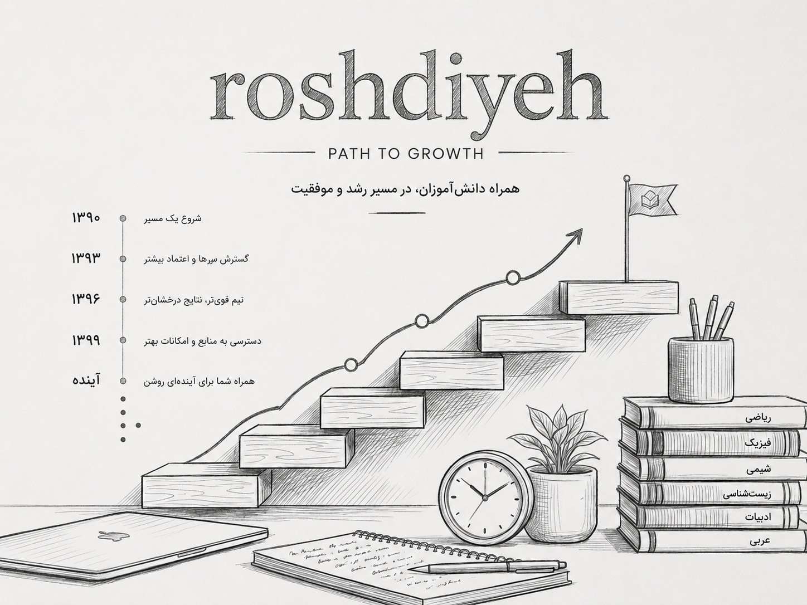

بیش از یک دهه تجربه در مسیر یادگیری عمیق و ماندگار

همهی ما در زندگی، معلمی را به خاطر داریم که فقط درس نمیداد؛ بلکه مسیر یادگیری را برایمان لذتبخش و ماندگار میکرد. آموزشگاه رشدیه نیز از دل همین عشق به آموزش متولد شد.
شروع این داستان از یک پرسش ساده بود: چرا باید عشق به تدریس، با پایان یک دورهی شغلی به پایان برسد؟ این پرسش، سالها در ذهن دو معلم باقی ماند تا اینکه سرانجام به یک تصمیم جدی تبدیل شد.
در سال ۱۳۹۰، دو نفر از فرهنگیان باسابقه آموزشوپرورش، پس از سالها تدریس، تصمیم گرفتند علاقه و تجربه خود را در مسیری تازه ادامه دهند. آنها باور داشتند که معلمی با بازنشستگی پایان نمییابد و رسالت آموزش، فراتر از کلاس درس و سالهای خدمت است. از همین باور، آموزشگاه رشدیه شکل گرفت؛ جایی که هدف آن، پرورش دانشآموزانی است که درس را میفهمند، نه اینکه فقط آن را حفظ کنند.
اولین کلاسهای رشدیه، در فضایی کوچک و ساده برگزار شد؛ اما از همان ابتدا، چیزی متفاوت در آن جریان داشت. دانشآموزانی که پیشتر درس را باری بر دوش میدانستند، کمکم آن را به فرصتی برای کشف و فهمیدن تبدیل کردند. همین تغییر نگاه، سنگبنای فلسفهی آموزشی رشدیه شد.
در رشدیه، آموزش را فراتر از انتقال مطالب درسی میبینیم. تلاش میکنیم هر مفهوم با روشهای تخصصی، ساده و کاربردی آموزش داده شود تا دانشآموز بتواند آموختههای خود را با اطمینان در امتحانات، آزمونها و مراحل بعدی تحصیل به کار بگیرد. باور ما این است که یادگیری زمانی ارزشمند است که ماندگار باشد.
این نگاه، ما را واداشت تا مسیر آموزش را نه یکطرفه، بلکه دوطرفه ببینیم؛ جایی که صدای دانشآموز و بازخورد خانواده، همانقدر مهم است که تجربهی معلم. از دل همین گفتوگوی مداوم، متدهای آموزشی رشدیه شکل گرفت و هر سال، دقیقتر و اثربخشتر شد.
کیفیت آموزش، مهمترین اصل ماست. به همین دلیل با بهرهگیری از اساتید باتجربه، متدهای آموزشی اختصاصی و کلاسهای کمجمعیت، محیطی فراهم کردهایم که هر دانشآموز فرصت یادگیری عمیق و دریافت آموزش متناسب با نیازهای خود را داشته باشد. کلاسهای حضوری و آنلاین، خصوصی و گروهی نیز با همین هدف طراحی شدهاند تا آموزش باکیفیت، برای همه در دسترس باشد.
بیش از یک دهه همراهی با دانشآموزان و خانوادهها، افتخار کسب نتایج ارزشمند در آزمونهای ورودی مدارس نمونه دولتی، تیزهوشان و سایر رقابتهای علمی را برای ما رقم زده است. اما بزرگترین دستاورد ما، دیدن اعتمادبهنفس دانشآموزانی است که با دانشی عمیقتر و آمادگی بیشتر، مسیر موفقیت تحصیلی خود را ادامه میدهند.
امروز، وقتی به مسیر طیشده نگاه میکنیم، آنچه بیش از هر عددی برایمان ارزشمند است، لبخند دانشآموزانی است که روزی از درس گریزان بودند و حالا آن را دوست دارند. این تغییر نگاه، همان چیزی است که رشدیه را از یک آموزشگاه معمولی متمایز میکند.
در رشدیه، ما تنها کلاس برگزار نمیکنیم؛ بلکه در کنار دانشآموزان و خانوادههایشان میایستیم تا یادگیری، به تجربهای عمیق، کاربردی و ماندگار تبدیل شود. زیرا باور داریم آیندهای روشن، از آموزش درست آغاز میشود.
۱۳+
سال تجربه
۵۰۰+
دانشآموز
۱۵
مدرس مجرب
۹۸٪
رضایت والدین
※
ما به مسیر یادگیری هر دانشآموز متعهد هستیم و تا رسیدن به نتیجهی مطلوب، در کنار او میمانیم.
متدهای اختصاصی و بهروز، همراه با تکنولوژیهای روز، یادگیری را برای دانشآموزان جذاب و اثربخش میکند.
آموزش را به گونهای طراحی میکنیم که دانشآموز بتواند مفاهیم را در زندگی واقعی و مسیر تحصیلی خود به کار بگیرد.
مؤسس و مدیر آموزشی
[توضیحات کوتاه دربارهی سابقه، تخصص و فلسفهی آموزشی ایشان]
مؤسس و مشاور آموزشی
[توضیحات کوتاه دربارهی سابقه، تخصص و فلسفهی آموزشی ایشان]
با ما تماس بگیرید تا در کنار هم، بهترین مسیر آموزشی را برای فرزندتان طراحی کنیم.